<meta data-freshmark-page data-title="天体运动:万有引力定律应用 — Freshmark" data-description="&gt;" data-canonical="https://example.com/posts/physics/application-of-the-law-of-gravitation/" data-article="true"><main><header class="container article-header"><a class="back-link" href="/">← Back to all writing</a><h1>天体运动:万有引力定律应用</h1><p class="article-dek">&gt;</p><div class="article-meta"><time datetime="2026-06-08">June 8, 2026</time><span>5 min read</span><span>物理竞赛 · 微积分</span><a href="index.md" download>Download Markdown</a></div></header><div class="article-wrap"><aside class="toc"><p>On this page</p><a href="#">朝花夕拾</a><a href="#">一:轨道</a><a href="#">椭圆</a><a href="#">小试牛刀(椭圆的光学性质)</a><a href="#">椭圆轨道比较</a><a href="#">抛物线轨道</a><a href="#">位力定理</a><a href="#">基本表达式</a><a href="#">幂次势下的简化形式</a><a href="#">意义与适用范围</a><a href="#">简单证明</a><a href="#">二:潮汐</a><a href="#">三:转动参考系</a><a href="#1">例1</a><a href="#2">例2</a><a href="#">尾声</a></aside><article class="prose"><!--more-->
<h2 id="">朝花夕拾</h2>
<p>证明:若质量为\(m_1,m_2,m_3\)的三质点形成稳定转动形态后(均做圆周运动,周期相同),若三者<strong>不共线</strong>,则\(m_1,m_2,m_3\)形成<strong>正三角形</strong>.</p>
<p>以质心为中心,换转动系,则\(m_1,m_2,m_3\)静止.</p>
<p>引入惯性离心力:</p>
<p>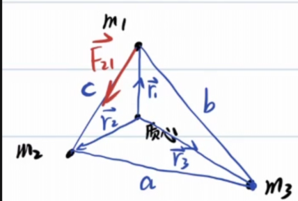 \[\begin{gathered} \vec{r_c}=\frac{\sum m_i\vec{r_i}}{\sum m_i}=\vec{0}\\ \vec{F_{12}}=G\frac{m_1m_2}{c^2}(\vec{r_2}-\vec{r_1})\frac{1}{c}\\ =G\frac{m_1m_2}{c^3}(\vec{r_2}-\vec{r_1})\\ \vec{F_{13}}=G\frac{m_1m_2}{c^2}(\vec{r_2}-\vec{r_1})\frac{1}{c}\\ =G\frac{m_1m_2}{b^3}(\vec{r_3}-\vec{r_1})\\ \vec{F_{\text{惯1}}}=m_1w^2\vec{r_1}\\ \Rightarrow \begin{cases}G\frac{m_1m_2}{c^3}(\vec{r_2}-\vec{r_1})+G\frac{m_1m_2}{b^3}(\vec{r_3}-\vec{r_1})+m_1w^2\vec{r_1}=0,\\ \vec{r_3}=-\frac{-(m_1\vec{r_1}+m_2\vec{r_2})}{m_3}\end{cases}\\ (\frac{Gm_2}{c^3}-\frac{Gm_2}{b^3})\vec{r_2}=(\frac{Gm_1}{b^3}+\frac{Gm_3}{b^3}+\frac{Gm_2}{c^3}-w^2)\vec{r_1} \end{gathered}\]</p>
<p>又因为\(\vec{r_1},\vec{r_2}\)不共线,只能有:</p>
<p>\[\begin{cases} \frac{Gm_2}{c^3}-\frac{Gm_2}{b^3}=0,\\ \frac{Gm_1}{b^3}+\frac{Gm_3}{b^3}+\frac{Gm_2}{c^3}-w^2=0 \end{cases}\]</p>
<p>得到\(b=c\),同理\(a=b=c\),则三者构成的图形是正三角形.</p>
<p>顺便得到:\(\omega=\sqrt{\frac{G(m_1+m_2+m_3)}{a^3}}\)</p>
<p>此问题正是著名的<strong>拉格朗日点</strong>问题</p>
<p>本文推导的正三角形解对应 <strong>L4、L5</strong> 两个稳定拉格朗日点。</p>
<p>另外三个共线点 <strong>L1、L2、L3</strong> 由三体共线平衡条件（欧拉解）给出，</p>
<p>需对两大天体连线上的合力方程单独求解。</p>
<p>五个拉格朗日点合称欧拉-拉格朗日点。</p>
<p>附上一道练习题:</p>
<p>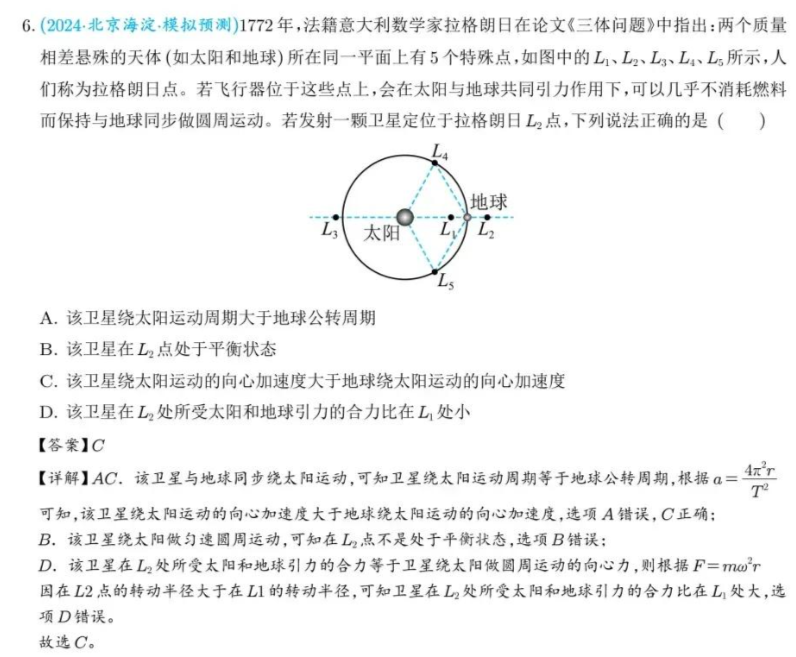</p>
<h2 id="">一:轨道</h2>
<h3 id="">椭圆</h3>
<p><strong>椭圆第一定义</strong></p>
<p>\[\boxed{r_1+r_2=2a}\]</p>
<p>对于椭圆的一根焦点弦,焦点把焦点弦分为长度为\(r_1,r_2\)两部分,有:</p>
<p>\[\boxed{\frac{1}{r_1}+\frac{1}{r_2}=C}\]</p>
<p>过椭圆内一点做出三条弦,分别交椭圆与六个点,这六个点顺次连接,相邻点的距离分别为\(a,d,c,f,b,e\),有:</p>
<p>\[\boxed{abc=edf}\]</p>
<p><strong>椭圆的光学性质</strong></p>
<p>在椭圆的一个焦点,发出一条光线,光线在椭圆上反射后的光线经过另一个焦点.</p>
<p>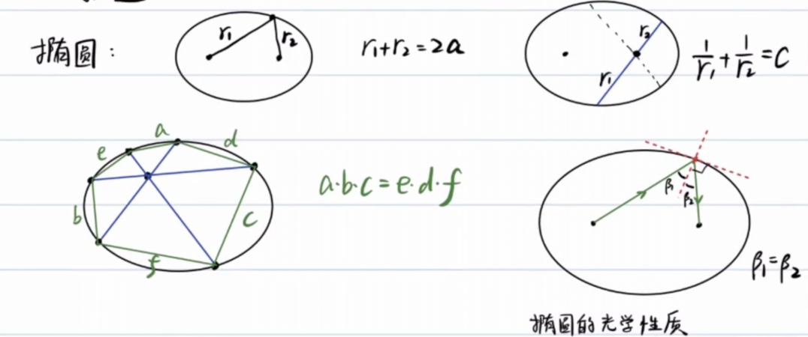</p>
<p><strong>椭圆顶点的曲率半径</strong></p>
<p>这个在<a href="/posts/physics/basic-calculus-04/">微积分基础</a>中已经证明.</p>
<p>长轴:\(\frac{b^2}{a}\),短轴:\(\frac{a^2}{b}\)</p>
<p>计算方法:\(\rho=\frac{v^2}{a_n}\)</p>
<p>其中:\(v\)为<strong>速度</strong>,\(a_n\)为<strong>法向加速度</strong>.</p>
<p>可以构造一个运动,在<a href="https://axiom.zh-cn.edgeone.cool/posts/physics/universal-law-of-graviation/">天体运动:万有引力定律</a>我们已经研究过长轴处的速度情况,故考虑行星绕天体的运动.</p>
<p>在近日点(长轴顶点)处:</p>
<p>\[\begin{gathered} v^2=GM\frac{a+c}{a-c}\frac{1}{a}\\ a_n=\frac{GM}{(a-c)^2}\\ \rho=\frac{v^2}{a_n}=\frac{a^2-c^2}{a}=\frac{b^2}{a} \end{gathered}\]</p>
<p>在短轴顶点处:</p>
<p>\[\begin{gathered} \frac{1}{2}mv^2+(-\frac{GMm}{a})=-\frac{GMm}{2a}\\ v^2=\frac{GM}{a}\\ |\vec{a_\tau}+\vec{a_n}|=\frac{GM}{a^2},a_n=|\vec{a_\tau}+\vec{a_n}|\frac{b}{a}=\frac{GMb}{a^3}\\ \rho=\frac{v^2}{a_n}=\frac{a^2}{b} \end{gathered}\]</p>
<p>常见的与椭圆参量相关的物理量:</p>
<ol><li>\(E=-\frac{GMm}{2a}\)</li><li>\(\delta=\frac{dS}{dt}=\frac{\pi ab}{T}=\frac{L}{2m}\)</li><li>\(\frac{T^2}{a^3}=\frac{4\pi^2}{GM},T=\frac{\pi ab}{\delta}=\frac{2\pi}{\sqrt{GM}}a^\frac{3}{2}\)</li><li>\(L=b\sqrt{-2mE}\)</li><li>\(r_n=a-c,r_f=a+c,b=\sqrt{r_nr_f}\)</li></ol>
<p>椭圆的直角坐标方程:\(\frac{x^2}{a^2}+\frac{y^2}{b^2}=1\)</p>
<p>极坐标方程:\(\rho=\frac{p}{1+e\cos\theta},p=\frac{b^2}{a}\),其中p称为焦半径.</p>
<p>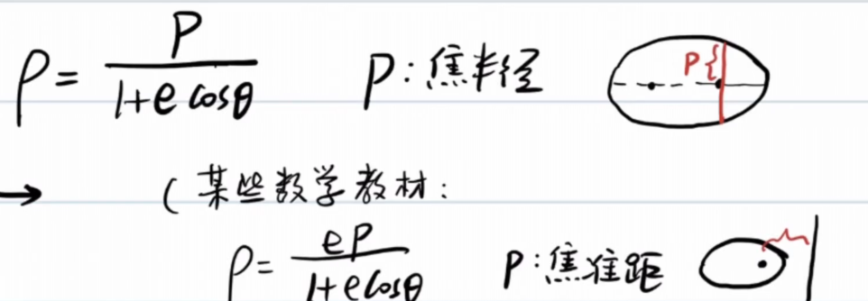</p>
<p>事实上,这一参数方程亦适用于其他圆锥曲线.</p>
<h3 id="">小试牛刀(椭圆的光学性质)</h3>
<p>(28届复赛第一题:节选)</p>
<p>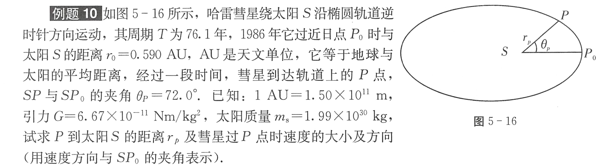</p>
<p>科普一下天文单位:</p>
<p>&gt;天文单位（Astronomical unit, AU）是天文学中计量天体之间距离的一种长度单位，在数值上等于地球和太阳之间的平均距离，现定义为149597870.7公里。 它也可以被认为是地球公转轨道的半长轴长度，即地球绕太阳椭圆轨道最大直径的一半的长度。</p>
<p>首先利用回归周期计算半长轴\(a\):</p>
<p>\[\begin{gathered} \frac{T^2}{a^3}=\frac{4\pi^2}{GM_s}\\ a=\sqrt[3]{\frac{GM_sT^2}{4\pi^2}}=2.69\times10^{12}m=17.90AU \end{gathered}\]</p>
<p>紧接着,我们利用\(r_0\)求出\(r_p\):</p>
<p>\[\begin{gathered} r_0=a-c=0.590AU\\ c=17.31AU\\ e=\frac{c}{a}=0.967\\ b=\sqrt{a^2-c^2}=4.56AU\\ r_p=\frac{\frac{b^2}{a}}{1+e\cos72\degree}\\ =0.894AU \end{gathered}\]</p>
<p>标出椭圆的另一焦点Z.做出\(\angle ZPS\)的角平分线.</p>
<p>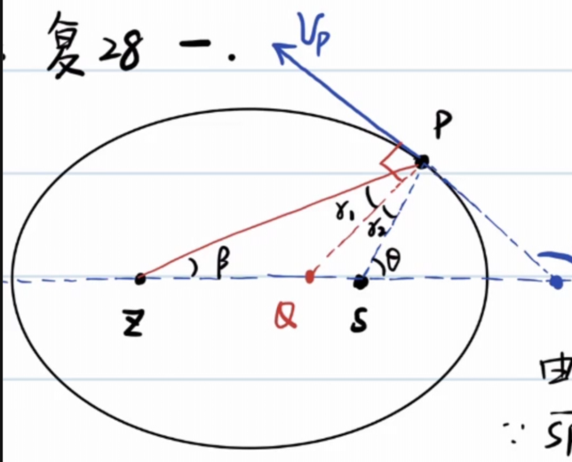</p>
<p>根据椭圆的光学性质,\(v_p\)垂直于角平分线.</p>
<p>在\(\triangle ZPS\)中使用正弦定理:</p>
<p>\[\begin{gathered} \frac{\sin2r_2}{2c}=\frac{\sin72\degree}{2a-r_p}\\ \sin2r_2=\frac{2c}{2a-r_p}\sin72\degree\\ r_2=\frac{1}{2}\arcsin(\frac{2c}{2a-r_p}\sin72\degree)\\ =35.3\degree\\ \varphi=90\degree+(\theta-r_2)=126.7\degree=127\degree \end{gathered}\]</p>
<p>对于速度方向,我们还可以通过切线斜率求出:</p>
<p>\[\begin{gathered} x_p=c+r_p\cos72\degree=17.59AU\\ y_p=r_p\sin72\degree=0.850AU\\ k_{OP}k_v=-\frac{b^2}{a^2}\\ k_v=-1.34\\ \varphi=127\degree \end{gathered}\]</p>
<p>我们已经解决了P到太阳的距离及速度方向,该解决速度大小了:</p>
<p>\[\begin{gathered} \frac{1}{2}mv^2+(-\frac{GM_sm}{r_p})=-\frac{GM_sm}{2a}\\ v=\sqrt{2(\frac{GM_s}{r_p}-\frac{GM_s}{2a})}\\ =4.39\times10^4m/s \end{gathered}\]</p>
<p>完结,撒花.</p>
<p>这里呈上质心标答:</p>
<p>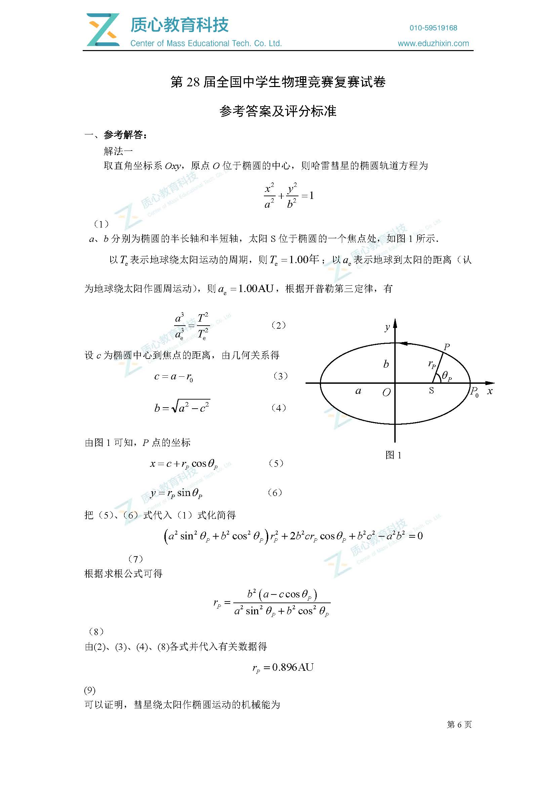</p>
<p>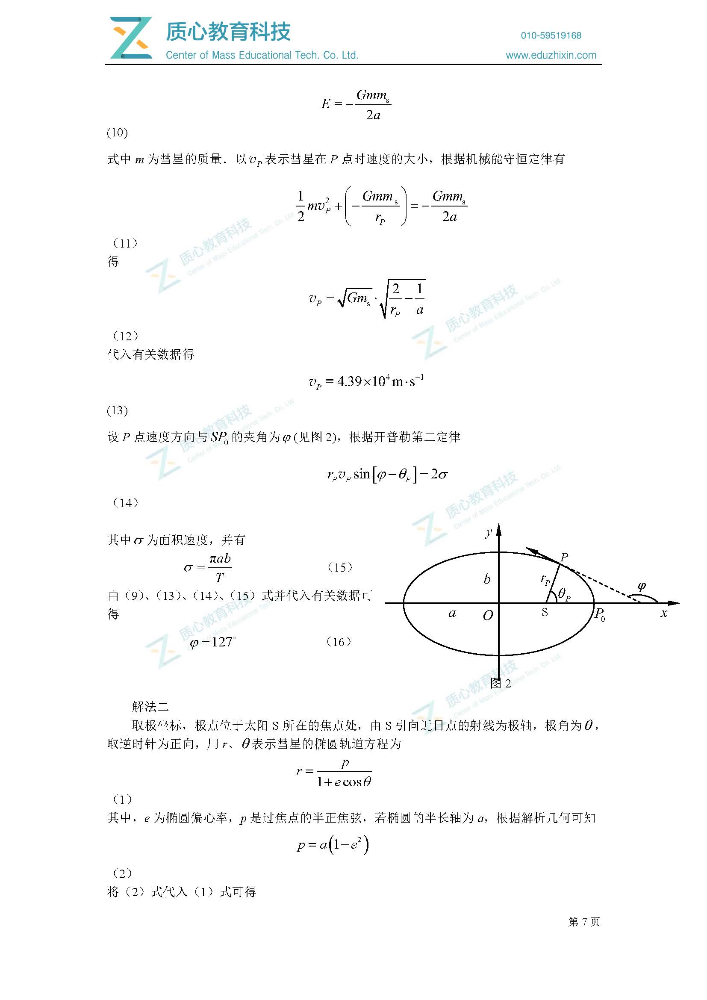</p>
<p>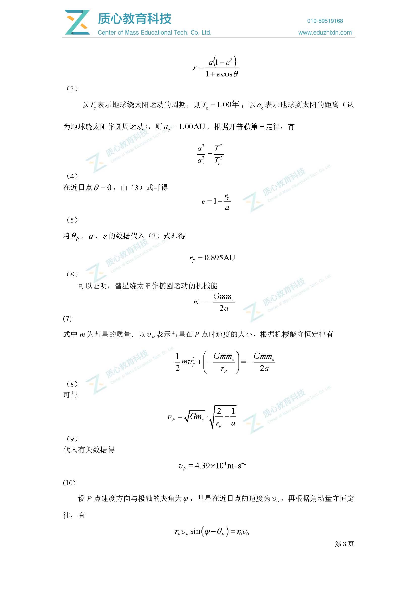</p>
<p>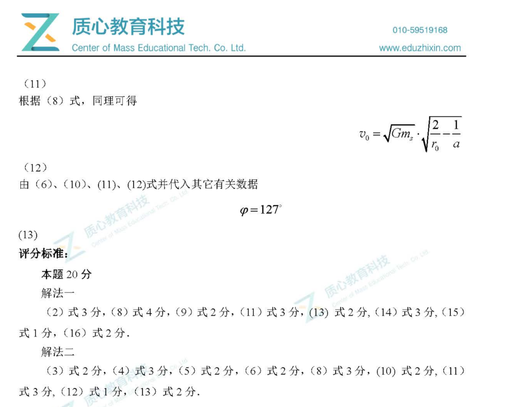</p>
<h3 id="">椭圆轨道比较</h3>
<p>对于半长轴\(a\)不变的轨道,它们的机械能都等于\(-\frac{GMm}{2a}\)</p>
<p>不难看出,这些轨道的极端情况是接近直线和接近正圆.</p>
<p>角动量\(L=b\sqrt{-2mE}\),在轨道接近直线时\(L\to 0\),在轨道接近正圆时,L变大.</p>
<p>所以,\(0\lt L\le L_0\)</p>
<p></p>
<p>对于角动量\(L\)不变的轨道,显然半长轴\(a\)越大,机械能\(E\)越大,相应\(b\)必须增大.</p>
<p>容易证明,焦半径\(p=\frac{L^2}{GMm^2}\)为一定值.</p>
<p></p>
<h3 id="">抛物线轨道</h3>
<blockquote><p>在以太阳为原点的日心坐标系中，地球绕太阳做匀速圆周运动，轨道半径为 \(R\)，周期 \(T_{\text{地}}=1\ \text{年}\)。</p></blockquote>
<p>&gt;</p>
<blockquote><p>一颗彗星沿抛物线轨道掠过太阳系，其机械能 \(E=0\)，太阳位于该抛物线的焦点。彗星的近日点 \(C\) 位于 \(y\) 轴正方向，到太阳的距离为 \(R/2\)（即近日距 \(q=R/2\)）。该抛物线轨道与地球圆轨道相交于 \(A\)、\(B\) 两点，二者位于 \(x\) 轴上，坐标为 \(A(-R,0)\)、\(B(R,0)\)。</p></blockquote>
<p>&gt;</p>
<blockquote><p><strong>求：</strong> 彗星沿抛物线由 \(A\) 经近日点 \(C\) 到 \(B\) 所经历的时间 \(t_{AB}\)。</p></blockquote>
<p></p>
<p>由图可知,\(p=R=\frac{L^2}{GMm^2}=\frac{4\delta^2}{GM},\delta=\frac{1}{2}\sqrt{GMR}\)</p>
<p>显然抛物线方程为\(x^2=-2p(y-\frac{R}{2})=-2R(y-\frac{R}{2})\)</p>
<p>也就是说,\(y=-\frac{x^2}{2R}+\frac{R}{2}\)</p>
<p>分析一下地球运动周期:</p>
<p>\[\begin{gathered} \frac{GMm_e}{R^2}=m_e\frac{4\pi^2}{T^2}R\\ GM=4\pi^2\frac{R^3}{T^2} \end{gathered}\]</p>
<p>借助彗星扫过的面积\(S\)和面积速度\(\delta\),可以求出运动时间:</p>
<p>\[\begin{gathered} S=\int_{-R}^{R}(-\frac{x^2}{2R}+\frac{R}{2})dx=\frac{2R^2}{3}\\ t=\frac{S}{\delta}=\frac{\frac{2}{3}R^2}{\frac{1}{2}\sqrt{GMR}}=\frac{4R^2}{3\sqrt{4\pi^2\frac{R^4}{T^2}}}\\ =\frac{2T}{3\pi}=77.5day \end{gathered}\]</p>
<h1 id="">位力定理</h1>
<p><strong>位力定理</strong>（英语：Virial theorem，又称维里定理、均功定理）是[力学]中描述稳定的多自由度孤立体系的总<strong>动能</strong>和总<strong>势能</strong>时间平均之间的数学关系。</p>
<h2 id="">基本表达式</h2>
<p>考虑一个有 \(N\) 个质点的体系，其数学表达式为：</p>
<p>\[\langle T \rangle = -\frac{1}{2}\sum_{k=1}^{N}\langle \mathbf{F}_k \cdot \mathbf{r}_k \rangle\]</p>
<p>其中：</p>
<ul><li>角括号 \(\langle\cdots\rangle\) 表示对时间取平均；</li><li>\(T\) 是系统内部的总动能；</li><li>\(\mathbf{F}_k\) 是第 \(k\) 个质点所受的合力；</li><li>\(\mathbf{r}_k\) 是第 \(k\) 个质点的位置向量；</li><li>等式右边称作<strong>均位力积</strong>（virial），反映体系内相互作用强度。</li></ul>
<blockquote><p>英语 <em>virial</em> 一词由德国物理学家<strong>鲁道夫·克劳修斯</strong>于 1870 年根据拉丁语单词 <em>vīs</em>（意为力、能量）命名。</p></blockquote>
<h3 id="">幂次势下的简化形式</h3>
<p>若系统内任意两粒子之间的力来自与粒子间距 \(r\) 的 \(n\) 次幂成正比的势能</p>
<p>\[V(r) = \alpha r^n \quad (\alpha,\, n \text{ 为常数})\]</p>
<p>则定理简化为：</p>
<p>\[2\langle T \rangle = n\langle V_{\text{total}} \rangle\]</p>
<p>即体系总动能的 2 倍等于总势能的 \(n\) 倍。</p>
<p>| 势能类型 | \(n\) | 结论 | |---|---|---| | 引力 / 库仑势 | \(-1\) | \(2\langle T\rangle = -\langle V\rangle\) | | 谐振子势 | \(2\) | \(\langle T\rangle = \langle V\rangle\) |</p>
<h2 id="">意义与适用范围</h2>
<p>位力定理的重要意义在于，它允许计算平均总动能，即便对于那些<strong>无法精确求解的复杂系统</strong>（例如统计力学中考虑的多体系统）也同样适用。</p>
<ul><li>根据<strong>能量均分定理</strong>，平均总动能与系统温度相关；</li><li>然而位力定理<strong>不依赖温度概念</strong>，甚至适用于不处于热平衡的系统；</li><li>该定理已被推广至多种形式，特别是<strong>张量形式</strong>。</li></ul>
<p>特别的,对于稳定的多体运动,若各质点相对位置不变,则系统总动能和总势能不变,恒有:</p>
<p>\[\boxed{2E_k=-E_p}\]</p>
<h3 id="">简单证明</h3>
<p>设n个质量相同的质点组成正n边形,稳定地做半径为\(r_0\)的匀速圆周运动.</p>
<p>每个质点受到的向心力\(F(r_0)=m\frac{v^2}{r_0}=\frac{A}{r_0^2}\)</p>
<p>\[\begin{gathered} E_k=n\frac{1}{2}mv^2=\frac{n}{2}r_0m\frac{v^2}{r_0}=\frac{n}{2}r_0F(r_0) \end{gathered}\]</p>
<p>使用虚功原理,让每个质点沿着径向方向移动\(dr\).</p>
<p>\[\begin{gathered} dE_p=nF(r)dr\\ E_p=\int_{\infty}^{r_0}n\frac{A}{r^2}dr=-nA\frac{1}{r_0}=-2E_k \end{gathered}\]</p>
<h2 id="">二:潮汐</h2>
<p>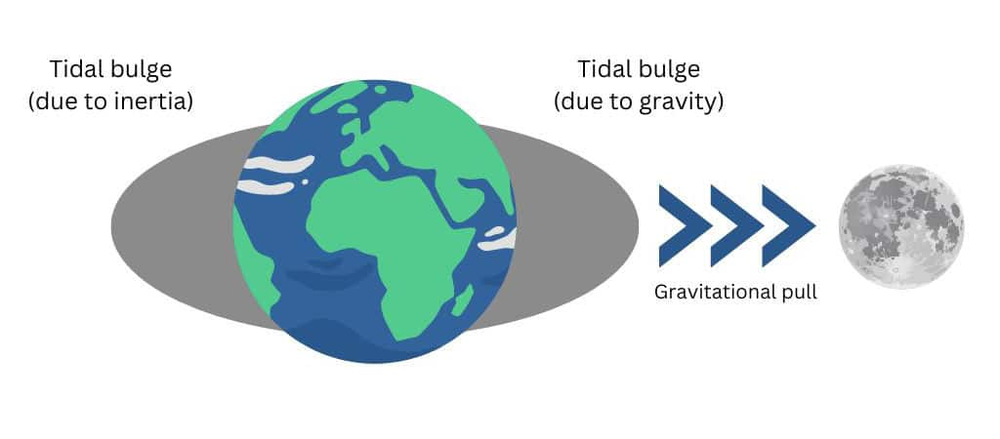 潮汐的本质是<strong>引力差</strong>,地球半径造成的月球引力变化不可忽略.</p>
<p>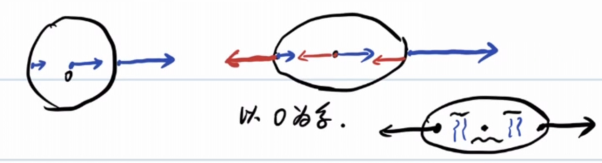</p>
<p>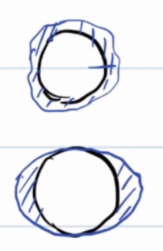</p>
<p>把水额外拉高的力,称为<strong>引潮力</strong>.</p>
<p>以地球质心为惯性系,这样地球各点受到与质心所受引力相同的惯性力.</p>
<p></p>
<p>设月(m)onth地距离为\(r_m\),地球半径为\(R\)</p>
<p>\[\begin{gathered} a_c=\frac{GM_m}{r_{m}^2}\\ F_A=\Delta ma_c-\frac{GM_m\Delta m}{(r_m+R)^2}\\ =\frac{GM_m\Delta m}{r_{m}^2}-\frac{GM_m\Delta m}{(r_m+R)^2}\\ =\frac{GM_m\Delta m}{r_{m}^2}(1-\frac{1}{(1+\frac{R}{r_m})^2})\\ \approx \frac{GM_m\Delta m}{r_{m}^3}2R\propto \frac{1}{r_m^3} \end{gathered}\]</p>
<p>同理\(F_B=\frac{GM_m\Delta m}{r_{m}^3}2R\propto \frac{1}{r_m^3}\)</p>
<p>审视一下计算结果，被吸引物体越大，<strong>引潮力</strong>越大，更容易被撕裂。</p>
<p>当天体靠近大质量中心体近到某个临界距离时，中心体对该天体的引潮力将超过天体 自身的自引力，天体就会被撕碎，这一临界距离称为<strong>洛希极限</strong>：</p>
<p>\[\begin{gathered} \frac{GM_M\Delta m}{d^3}2R=\frac{GM\Delta m}{R^2}\\ d=2^\frac{1}{3}R_M(\frac{M_m}{m})^\frac{1}{3} \end{gathered}\]</p>
<p>事实上,上面把卫星当作无形变的刚体质点，忽略了两个效应：</p>
<p>卫星本身因引潮力被拉伸变形（椭球化），增大了近端距离，自引力减弱； 卫星绕轨道运动的离心效应。</p>
<p>修正系数后得到:</p>
<p>\[d \approx 2.44\, R_M \left(\frac{M_M}{m}\right)^{1/3}\]</p>
<p>大卫星和小卫星在同一轨道上受到的引潮力虽然不同（大的更强），但大卫星的自引力也按同样比例增大，两者恰好抵消，<strong>洛希极限与卫星尺寸无关</strong>。</p>
<p>土星环正是卫星或彗星越过洛希极限后被潮汐力撕裂、散布成碎片环的遗迹。</p>
<p>在《星际穿越》中展示了这一点：主角团登陆的米勒星球极度靠近超大质量黑洞 <strong>卡冈图雅</strong>，强烈的引潮力在星球海洋上激起数十米高的周期性巨浪； 而库珀驾驶飞船贴近黑洞时，飞船恰好处于洛希极限之外—— 一旦越过，引潮力将直接将飞船撕碎。(Sonnet 4.6告诉我的,我本人没有看过)</p>
<p>不难算出\(\frac{F_{m}}{F_{s}}\approx 2.2\),太阳对地球的引潮力小于月球造成的引潮力.</p>
<p>在一个月内,大概在初一/十五有两次<strong>大潮</strong>(太阳,月球,地球共线)</p>
<p>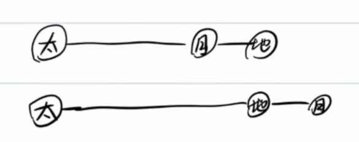</p>
<p><strong>小潮</strong>:\(\angle \text{日地月}=90\degree\),太阳和月亮对地球形成的引潮力正交,效果上相互抵消</p>
<p>直观感受潮汐:</p>
<p></p>
<h2 id="">三:转动参考系</h2>
<p>26届复赛的送分题:</p>
<p>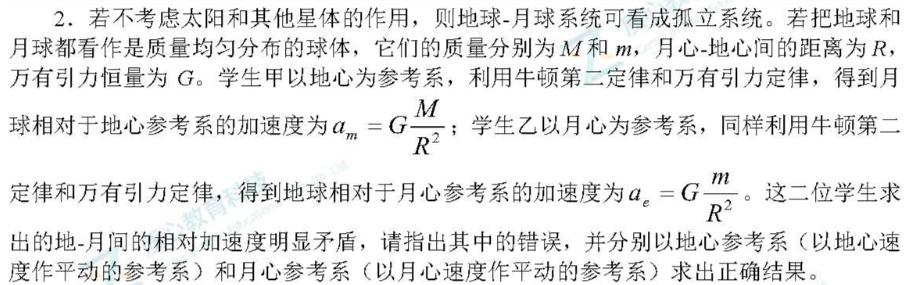</p>
<p>以一个运动的物体为惯性系,应该引入惯性力:</p>
<p>以地球为惯性系,月球所受的惯性力与月地引力相同:</p>
<p>\[F=\frac{GMm}{R^2}+m\frac{Gm}{R^2}=ma\Longrightarrow a=\frac{G(M+m)}{R^2}\]</p>
<p>以月球为惯性系同理可以算出一样的结果,与伽利略变换不矛盾.</p>
<h3 id="1">例1</h3>
<p>有一颗卫星做匀速圆周运动,运动周期为\(T\),线速度为\(v_0\),运动半径为\(r\).</p>
<p>若卫星法向或切向(运动同向)获得一个速度\(u_n\)或\(u_\tau\)(均小于\((\sqrt{2}-1)v_0\),这样行星以椭圆轨道运动),求:</p>
<p>(1)\(T_n&#39;,T_\tau&#39;\)</p>
<p>(2)若\(u_n=u_t\),比较\(T_n&#39;,T_\tau\)的大小.</p>
<p>考虑机械能变化和位力定理的结合:</p>
<p>如果法向方向额外获得\(u_n\),则:</p>
<p>\[\begin{gathered} \frac{T_n&#39;}{T}=(\frac{a_n&#39;}{r})^{\frac{3}{2}}=(\frac{E_0}{E_n&#39;})^\frac{3}{2}\\ =(\frac{-\frac{1}{2}mv_0^2}{-mv_0^2+\frac{1}{2}m(v_0^2+u_n^2)})^\frac{3}{2}\\ =(\frac{\frac{1}{2}mv_0^2}{mv_0^2-\frac{1}{2}m(v_0^2+u_n^2)})^\frac{3}{2} \end{gathered}\]</p>
<p>如果法向方向(与运动方向相同)额外获得\(u_\tau\),则:</p>
<p>\[\begin{gathered} \frac{T_\tau&#39;}{T}=(\frac{a_n&#39;}{r})^{\frac{3}{2}}=(\frac{E_0}{E_n&#39;})^\frac{3}{2}\\ =(\frac{-\frac{1}{2}mv_0^2}{-mv_0^2+\frac{1}{2}m(v_0+u_t)^2})^\frac{3}{2}\\ =(\frac{\frac{1}{2}mv_0^2}{mv_0^2-\frac{1}{2}m(v_0+u_t)^2})^\frac{3}{2} \end{gathered}\]</p>
<p>显然,如果\(u_n=u_t\),则\(T_n&#39;\lt T_\tau&#39;\)</p>
<h3 id="2">例2</h3>
<p>2018年1月31日晚,发生了超级 蓝血 月全食(blue moon)</p>
<p>当然,这里的蓝月亮不是洗衣液.</p>
<p>blue moon:一个公历月出现了第二次满月.</p>
<h2 id="">尾声</h2>
<p>回头看这篇笔记，从椭圆轨道出发，绕了一大圈——</p>
<p>彗星掠过太阳，用面积速度算时间； 三体转动，逼出正三角形和拉格朗日点； 潮汐撕碎卫星，土星环是引力留下的残骸； 最后卫星被推一脚，轨道周期就这么变了。</p>
<p>这些内容表面上毫不相关，但核心都是同一个问题：<strong>在引力主导的世界里，物体倾向于做什么？</strong></p>
<p>答案是：绕圈、变形、被撕碎，或者稳稳地待在拉格朗日点上—— 取决于它离危险有多近。</p></article></div></main>